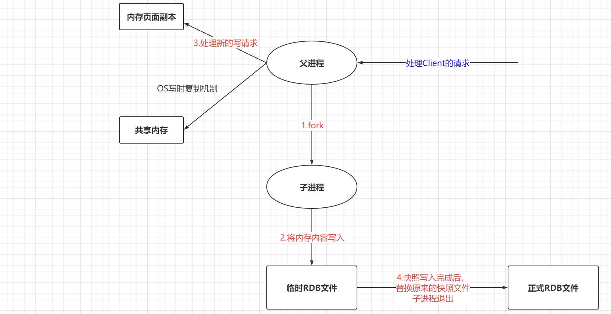
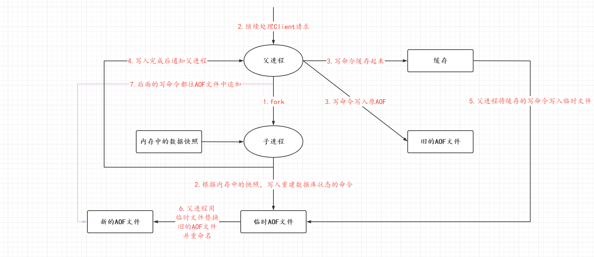

Redis初级学习
金风玉露一相逢，便胜却人间无数
Redis基础篇
NoSQL简介
NoSQL泛指非关系型数据库（Not Only Sql），NoSQL数据库通常可以分为四个大类：
键值存储数据库
表中有一个特定的键和一个指针指向特定的数据，如Redis，Voldmort，Oracle BDB
列存储数据库
通常用来应对分布式存储的海量数据，键仍然存在，但是它们的特点是指向了多个列，如HBase，Riak
文档型数据库
该类型的数据模型是版本化文档，半结构化文档以特定的格式存储，比如JSON。文档型数据库可以看做是键值数据库的升级版，允许之间嵌套值。而且文档型数据库比键值数据库的查询效率更高，如CouchDB、MongoDB
图形数据库
图形结构的数据库同其他行列以及刚性结构的SQL数据库不停，它是使用灵活的图形模型，并且能够扩展到多个服务器上。
NoSQL数据库没有标准的查询云烟，因此进行数据库查询需要制定数据模型，许多的NoSQL数据库都有RESTFul的数据接口或者查询API。
NoSQL数据库具备的优点：
- 扩展性高：支持水平扩展（在集群中加入新的主机）和垂直扩展（在当前机器上面加大内存和性能等）
- 高可用：当主节点挂掉后，直接切换到另外一台主节点上面，然后从节点挂到这个新的主节点上面。
Redis概述
Redis全称为Remote Dictionary Server —— 远程字典服务，是一个开源的使用ANSI C语言编写、支持网络、可基于内存亦可持久化的日志型、key-value数据库，并提供多种语言的API。
Redis的应用场景：
- 内存存储、持久化
- 效率很高，可用于高速缓存
- 发布-订阅系统
- 地图信息分析
- 计时器、计数器
Redis是基于内存的操作，CPU不是Redis的性能瓶颈，Redis的瓶颈是根据机器内存和网络带宽，既然可以使用单线程来实现，就使用单线程。
首先多线程并不一定就是会比单线程快，因为CPU的上下文切换也需要耗费时间；其次Redis的操作是基于内存，它将所有的数据都存放在内存中，所以使用单线程去操作就已经是最快了。对于内存系统而言，如果没有上下文的切换，多次读写都是在同一个CPU上，在内存情况下就是最快的。
Redis的五大数据类型
Redis 是一个开源（BSD许可）的，内存中的数据结构存储系统，它可以用作数据库、缓存和消息中间件。 它支持多种类型的数据结构，如 字符串（strings）， 散列（hashes）， 列表（lists）， 集合（sets）， 有序集合（sorted sets） 与范围查询， bitmaps， hyperloglogs 和 地理空间（geospatial） 索引半径查询。 Redis 内置了 复制（replication），LUA脚本（Lua scripting）， LRU驱动事件（LRU eviction），事务（transactions） 和不同级别的 磁盘持久化（persistence）， 并通过 Redis哨兵（Sentinel）和自动 分区（Cluster）提供高可用性（high availability）。
Redis-key的常用操作
# 选择数据库，redis中一共有16个数据库，index的范围为0~15
select index
# 查看当前库的大小
dbsize
# 查看当前库中所有的键
keys *
# 查看键对应的值
get key
# 设置一个新的键值对
set key name
# 设置一个新的键值对并且存活时间为10s
set key name ex 10
# 查看键的存活时间，-1表示永久存错；-2表示已经失效；integer表示存活剩余秒数
ttl key
# 给某个键设置10s过期时间
expire key 10
# 查看key是否存在,返回1表示为存在，返回0表示不存在
exists key
# 查看键值的类型
type key
# 删除当前库中所有的键值
flushdb
# 删除所有数据库中的键值
flushallString类型
String类型是Redis默认的数值类型：
set kye1 v1—— 设置一个key1-v1的键值对
get key1—— 获取一键值为key1所对应的值
exists key1—— 判断当前库中是否存在键为key1的键值对，返回值为1表示存在；返回值为0表示不存在。
append key1 hello—— 向键为key1的元素后面追加一个hello字符串。返回追加之后字符串的长度，如果当前key不存在就会新建一个key
strlen key1—— 获取键key1指向的字符串的长度
String类型并不仅仅包括字符串还可以存入数字类型进行计算，均返回计算之后的结果
incr view—— 让键为view的值自增1
decr view—— 让键为view的值自减1
incrby view 10—— 让键为view的值加10
decrby view 10—— 让键为view的值减10
也可以按照String类型中常用的方法区截取字符串、替换字符串
getrange key1 0 3—— 返回key1指向的字符串中从下标为0到3的字符组成的子串。end属性可以为-1，即表示全部的字符串
setrange key1 1 xx—— 返回用xx从key1指向的字符串的下标为1的字符开始替换后的字符串。abcd ==> axxd
可以给键设置过期时间
setex key1 30 hello—— 设置key1-hello的键值对过期时间为30s
ttl key1—— 查看key1的剩余存活时间，返回-2表示已经失效；返回-1表示永久有效；返回Integer类型的数字表示还有多少秒
可以在设置的时候进行判断，当键存在的时候才会向里面设置值
setnx my key redis—— 假如当前库中不再键值为key的键值对，将创建一个key-redis的键值对；返回1表示创建成功；返回0表示创建失败
可以在设置值的时候直接进行批量设置值
mset k1 v1 k2 v2 k3 v3—— 批量设置，k1-v1，k2-v2，k3-v3，k4-v4四个键值对
msetnx k3 v3 k4 v4—— 假如不存在键为k3的键值对且不存在键为k4的键值对才创建k3-v3,k4-v4的键值对（要么一起成功，要么一起失败）
mget k1 k2 k3—— 批量获取值，一次获取到键为k1、k2、k3所指向的字符串
getset db redis—— 先获取该键的当前值，再给该键设置新的值，如果当前键不存在，就返回null；存在就会当前值
应用场景：
- value除了是字符串还可以是数字
- 计数器
- 统计多单位计数器，点赞数等等
List类型
在Redis中可以将List变成栈和阻塞队列，所有的命令都是以l开头的
新建列表并向列表中插入元素
lpush list one—— 向键为list的列表的首端插入一个元素one，如果键值不存在，就新建一个键为list的列表
rpush list two—— 向键为list的列表的尾端插入一个元素two，如果键值不存在，就新建一个键为list的列表
lrange list start end—— 取出list中的部分数据，end设置为-1表示全部元素
linsert key BEFORE|AFTER pivot element—— 在key指向的列表中的pivot元素的前面|后面插入element元素，当pivot元素不再列表中返回null；当pivot元素在当前列表中返回列表最终的长度
列表中删除元素：
lpop key [count]—— 从键为key的列表的首端移除count个元素，count为可选参数，缺省默认值为1，返回移除的值
rpop key [count]—— 从键为key的列表的尾端移除count个元素，count为可选参数，缺省默认值为1，返回移除的值
lrem key count element—— 从键为key的列表中删除count个element元素，返回删除元素的个数
ltrim key start stop—— 在键为key的列表中截取下标start到end之间的元素
列表获取元素：
lindex key index—— 返回键为key的列表中下标为index的元素
llen key—— 返回键为key的列表的长度
rpoplpush source destination—— 从source指向的列表的尾端拿出一个元素插入到destination指向的列表的首端；如果destination指向的列表不存在则新建一个；如果source指向的列表不再则返回null；执行成功则返回移动的元素
列表中修改元素：
lset key index element—— 将key指向的列表中下标为index的元素修改为element
Set集合
新建一个Set集合，向集合中添加元素：
sadd key member [member ...]—— 新建一个集合，键为key 元素为member，可以一次添加多个元素
查看Set集合中元素：
smember key—— 获取Set集合中的元素
sismember key member—— 返回在key指定的Set集合中是否存在member元素，存在返回1；不存在返回0
scard key—— 获取Set集合中内容的个数
srandmember key [count]—— 从Set集合中随机抽取count个元素，count为可选参数，缺省默认值为1
移除Set集合中的元素
srem key member—— 移除Set集合中指定的元素，如果member在key所指向的集合中返回0；如果member不在key所指向的集合中返回1；
spop key—— 随机移除Set集合中的一个元素
smove source destination member—— 将source集合中的member元素移动到destination集合中，如果当前库中不存在destination集合就新建，如果当前库中不存在source就返回0；
集合之间的操作：
sdiff key [key1,key2...]—— 获取$key-(key_1\cup key_2 ··· \cup key_n)$中的元素，即在key集合中且不在key1、key2、…、keyn集合中的元素
sinter key [key1,key2...]—— 获取$key \cap key_1 \cap key_2 …\cap key_n$ 中的元素，即在key集合中也在key1、key2、…、keyn集合中的元素
sinter key [key1,key2...]—— 获取$key \cup key_1 \cup key_2 …\cup key_n$ 中的元素，在key、key1、key2、…、keyn中所有元素组成的集合
Hash类型
类似一个Map集合。向Hash中插入一个元素
hset key field value [field value ...]—— 向Hash中插入field-value键值对，可以一次插入多个键值对
hsetnc key field value—— 假如Hash中存在filed键就返回0，假如Hash不存在filed键就向Hash中添加field-value键值对并返回1
从Hash中获取元素：
hget key field—— 在key指向的Hash列表中获取键为field的值
hlen key—— 获取Hash表的字段数量
hexists key field—— 判断Hash中的key是否存在，存在返回1；不存在返回0
hkeys key—— 获取Hash中所有的键
hvals key—— 获取Hash中所有的值
从Hash中删除元素：
hdel myhash field—— 删除Hash指定的Key
修改Hash中的元素：
hincrby key filed increment—— 指定Hash中的元素自增
ZSet元素
在Set的基础上为每一个值增加一个Score分数字段，来表示一些特殊的意义，称之为有序集合
向ZSet集合中添加元素：
zadd key score member [score member ...]—— 向ZSet集合中添加元素，并设置元素的分数
查询ZSet中的元素：
zrangebyscore key min max [withscores]—— 范围查询，将分数在min到max之间的元素按照从小到大的顺序排列，withscores为可选参数，表示携带分数信息
zrange key min max—— 范围查询，不比较score比较下标，返回min下标到max下标之间的元素
zcard key—— 获取ZSet集合中元素的个数
zrevrange key start stop [withscored]—— 让ZSet集合中的元素在指定的start到stop的范围值按照降序进行排列，withscores可选参数表示是否携带分数信息
zcount key start stop—— 查询在$[strat,stop]$的区间内有多少个元素
删除ZSet集合中的元素：
zrem key member [member ...]—— 移除ZSet集合中在指定的元素
Redis的三大特殊数据类型
Geospatial 地理空间/地理位置信息
在Redis 3.2版本的时候推出，这个功能可以推算地理信息，两地之间的距离，方圆几里的人，只有六个命令
GEOADD key longitude latitude member—— 添加地理信息，key表示键，longitude表示经度，latitude表示纬度，member表示成员。（南极和北极是无法添加进去）其中经度的有效范围是$(-180,180)$，纬度的有效范围是$(-85.05112878,85.05112878)$，单位都是度。
GEOPOS key member [member ...]—— 查询地理信息，查询在key指向的集合中member元素的地理信息，可以一次查询多个
GEODIST key member1 member2 [m|km|ft|mi]—— 查询member1与member2元素之间的距离，m表示单位按照米显示；km表示单位按照千米显示；ft表示单位按照英尺计算；mi表示单位按照英里
GEORADIUS key longitude latitude radius m|km|ft|mi [WITHCOORD] [WITHDIST]—— 以给定的经纬度为中心， 返回键包含的位置元素当中， 与中心的距离不超过给定最大距离的所有位置元素。其中radius的单位有四种，withdist为可选参数，可以在返回元素的同时，将位置元素与中心之间的距离也一并返回；withcoord可选参数，将位置元素的经度和纬度也一并返回；
GEORADIUSBYMEMBER key member radius m|km|ft|mi [WITHCOORD] [WITHDIST] [WITHHASH] [COUNT count]—— 与上一条命令是一样的，只是这条命令可以以集合中的元素为中心去查找对应范围内的城市；
GEOHASH key member [member ...]—— 返回一个或多个位置元素的 Geohash表示。（不常用）将返回11个字符串的GeoHash字符串
GEO的底层是利用ZSet来实现，所以可以使用ZSet相关的命令。
Hyperloglog 基数
Redis在2.8.9更新出的Hyperloglog，用于基数统计的算法。网页的浏览量计算，可以避免在一个账号多次访问是只算做一次访问量。会出现误差，但是在很大的集合中是可以允许出现些许误差的。
pfadd key membber [member...]—— 向Hyperloglog中插入数据，可以一次插入多条
pfcount key [key...]—— 可以计算一个集合的基数 或多个集合的基数，在计算多个集合的时候是计算多个集合的并集的基数
PFMERGE destkey sourcekey [sourcekey ...]—— 将多个 HyperLogLog 合并（merge）为一个 HyperLogLog ， 合并后的 HyperLogLog 的基数接近于所有输入 HyperLogLog 的可见集合（observed set）的并集.
Bitmaps 位图
常用于统计用户信息。都是操作二进制位来进行记录，就只有0和1两个状态。
serbit key offset value—— 设置key所在的位图中的下标的状态，其中value只能是0或者1
getbit key offset—— 获取位图中对应下标的状态
bitcount key [start end]—— 获取位图中的状态信息，记录1的个数，其中start与end表示在下标为start和end之间的状态信息
Redis事务
Redis是单线程的在单条任务的情况下是一定能保证原子性的，但是Redis的事务是不具备原子性的。Redis事务的本质也是一组命令的集合的执行，一个事务中所有的命令都会被序列化。而且Redis事务是没有隔离级别的概念，所有的命令在事务中并不是直接执行，只有发起执行命令才会指向。
正常执行事务
在Redis中是一个事务的执行，往往是先开启一个事务，然后将事务中的命令存放在Queue中，然后执行命令输入的时候才开始正式的执行事务。
开启事务的方式为：multi
执行事务的方式为：exec
演示一个事务的执行：
127.0.0.1:6379> multi //开启一个事务
OK
127.0.0.1:6379(TX)> set key1 value1
QUEUED
127.0.0.1:6379(TX)> set key2 value 2
QUEUED
127.0.0.1:6379(TX)> get key1
QUEUED
127.0.0.1:6379(TX)> set key3 value 3
QUEUED
127.0.0.1:6379(TX)> exec //执行事务，可以看到事务中1和3命令执行成功，但是2和4命令执行失败
1) OK
2) (error) ERR syntax error
3) "value1"
4) (error) ERR syntax error
127.0.0.1:6379> keys * //在查询数据中可以看到key1依旧被添加进去了，所以证明Redis的事务是不具备原子性的
1) "key1"
2) "k3"
3) "k2"
4) "k1"放弃事务
Redis支持放弃事务的方式，利用discard命令可以让当前事务停止执行
multi
set key1 value1
discard
get key1 //因为取消了事务，插入操作并没有执行，所以此处返回为空Redis实现乐观锁
悲观锁是对数据的修改持悲观的态度，认为数据在修改的时候一定会存在并发的问题，因此在整个数据处理过程都会给数据上锁。悲观锁的实现，往往依赖数据库提供的锁机制（也只有数据库提供的锁机制才能保证数据访问的排他性）否则，即使在应用层中实现了加锁，也无法保证外部系统不会修改数据。
在MySQL中 InnoBD存储引擎默认的锁是行锁，所以只有明确地指定主键，MySQL才会执行行锁，否则MySQL会执行表锁。在MysQL中假如要使用悲观锁需要关闭自动提交，需要手动控制事务的提交。可以使用select ... for update给数据上锁
乐观锁，通常使用版本表示来确定读到的数据与提交时一致，提交后修改版本标识符，不一致可以采取丢弃和再次尝试的策略。
在Redis中实现乐观锁和悲观锁采用是Watch机制，涉及到的命令有multi exec discard 。watch指令在一次事务执行完毕之后就会结束其生命周期。
Reidis实现乐观锁比较简单，主要是利用watch机制监视一个key的变动，并在watch和unwatch之间做一个类似事务的操作，只有当事务操作成功了，整体循环才会跳出，当然操作期间watch的key变动的时候，提交事务操作的时候，事务操作将会被取消。
通过Jedis操作Redis
JRedis是Redis官方推荐的java连接开发工具，使用java操作Redis中间件。如果要使用java操作Redis的时候必须熟练掌握Jedis。Jedis的使用也是非常简单的，只需要引入依赖即可：
<dependency>
<groupId>redis.clients</groupId>
<artifactId>jedis</artifactId>
<version>3.2.0</version>
</dependency>然后初始化一个Jedis客户端，就可以在Jedis中操作Redis数据库。其常用方法与Redis中的API类似，针对Redis的命令，改成的方法名称一致。
public static void main(String[] args) {
Jedis jedis=new Jedis("xx.xx.xx.xx",6379);
String result=jedis.get("k1"); //就是Redis中的 get k1
System.out.println(result);
}基本数据类型与特殊数据库类型的操作都与Rrdis的操作类似，主要是事务的操作：
public class RedisClient {
public static void main(String[] args) {
Jedis jedis=new Jedis("81.69.20.85",6379);
jedis.auth("panhao");
jedis.flushDB();
JSONObject jsonObject=new JSONObject();
jsonObject.put("hello","world");
jsonObject.put("name","kuangshen");
//开启一个事务
Transaction multi=jedis.multi();
String result= jsonObject.toJSONString();
try {
multi.set("user1",result);
multi.set("user2",result);
//当发生Java运行时异常的时候，就会进入到catch语句块中
// int a=1/0;
//执行事务
multi.exec();
} catch (Exception e) {
//取消事务
multi.discard();
e.printStackTrace();
}finally {
System.out.println(jedis.get("user1"));
System.out.println(jedis.get("user2"));
//关闭客户端连接
jedis.close();
}
}
}对于事务的操作，还有一个就是利用Redis来实现一个乐观锁：
public class RedisClient {
public static void main(String[] args) {
Jedis jedis=new Jedis("81.69.20.85",6379);
jedis.auth("panhao");
//只有当该事务执行完了，才会跳出循环，否则会一直去尝试执行这个事务
while (true){
try {
//让Redis去监视money这个Key
jedis.watch("money");
//开启一个事务
Transaction transaction=jedis.multi();
transaction.decrBy("money",20);
transaction.incrBy("out",20);
//让线程暂停，在外部修改money的值
System.out.println("开始进入暂停");
Thread.sleep(10000);
//执行事务
List<Object> exec=transaction.exec();
if(exec==null||exec.isEmpty()){
//假如exec返回null即表示在外部遭到了数据修改，该事务需要执行失败
System.out.println("数据遭到外部修改，事务失败");
System.out.println("此时money的值："+jedis.get("money"));
System.out.println("此时out的值："+jedis.get("out"));
}else {
//假如exec不为空，即表示外部事务正常
System.out.println("该事务正常运行");
System.out.println("此时money的值："+jedis.get("money"));
System.out.println("此时out的值："+jedis.get("out"));
//事务执行成功直接跳出循环
break;
}
} catch (Exception e) {
e.printStackTrace();
}finally {
//无论事务是否成功，都需要对监视的键进行解锁
jedis.unwatch();
}
}
jedis.close();
}
}SpringBoot整合Redis
在SpringBoot中所有与数据库相关的依赖都被封装在Spring-data项目中，在Spring中引入Redis只需要导入对应依赖即可：
<dependency>
<groupId>org.springframework.data</groupId>
<artifactId>spring-data-redis</artifactId>
</dependency>在SpringBoot 2.x之后，原来使用的jedis被替换成了lettuce。
jedis与lettuce的区别：jedis：采用的直连，多个线程操作的话是不安全的，如果想要避免不安全，使用Jedis Pool连接池，是BIO
lettuce：采用netty，实例可以在多个线程中共享，不存在线程不安全的情况！可以减少线程数据，更像NIO， 因为采用的Netty所以需要序列化
SpringBoot拥有自动配置，所以在application.yml文件中配置Redis即可。
redis:
# 配置Redis数据的服务器IP地址
host: 81.69.20.85
# 端口号
port: 6379
# 密码
password: panhao
database: 0
lettuce:
pool:
#连接池最大链接数默认值为8
max-active: 8
#连接池最大阻塞时间（使用负值表示没有限制）默认为-1
max-wait: -1
#连接池中的最小空闲连接数 默认为8
max-idle: 0此时就可以直接使用RedisTemplate对象去操作Redis数据库（因为Redis的String类型是最常用的，所以在SpringBoot中自动注入了一个StringTemplate，它的key和value采用的都是StringRedisSerializer）
在RedisTemplate中的常用方法与Redis的API都是类似，其中：
- 操作String类型的方法为
opsForValue()，采用的链式编程，后面可以接get()set()等等与String相关的API - 操作List类型的方法为
opsForList()，采用的链式编程，后面可以接lpush()lpop()等等与List相关的API - 以此类推，操作Hash类型的方法为
opsForHash()；操作Set类型的方法为opsForSet()；操作ZSet的方法为opsForZset() - 还有三种操作特殊数据类型的方法为：
opsForHyperloglog()opsForGeo(),其中BitMap的操作使用依旧是opsForValue()
@SpringBootTest
@ContextConfiguration
class MyhomeApplicationTests {
@Autowired
private RedisTemplate<String,Object> template;
@Test
public void test() {
Set<String> keys = template.keys("*");
template.opsForValue().setIfAbsent("age","24");
for (String key : keys) {
System.out.println("【key="+key+",value="+template.opsForValue().get(key)+"】");
}
}
}Redis的序列化
Redis要序列化对象可以跨平台存储和进行网络传输。因为存储和网络传输都需要把一个对象状态保存成一种跨平台识别的字节格式，然后其他的平台才可以通过字节信息解析还原对象信息，所以进行跨平台存储和网络传输的数据都需要进行序列化。Redis默认的序列化方式的JDK序列化。当我们向Redis中存储对象的时候，如果对象没有实现Serializable接口，就会报错。
JDK序列化
Redis默认使用的是JdkSerializationRedisSerializer —— JDK序列化器。使用该序列化器比较笨重，首先它要求存储的对象必须实现java.io.Serializable接口，其次它存储的为二进制数组，对开发者不友好。因为存储的二进制的数据，有时候一个Redis会多个项目共用，如果同一个可以缓存的对象在不同的Project中使用需要使用两个不同的Key来分别缓存，即麻烦又浪费。
使用JDK序列化的优点是反序列化的时候不需要传入类型信息，但缺点是需要实现Serializable接口，还有序列化后的结果非常庞大，是JSON格式的5倍左右，这样会对内存的消耗会比较大。
在使用JDK序列化机制的时候，我们使用代码存入数据取出数据都是正常的，但是当去到Redis数据库使用redis-cli连接查看的时候会发现我们存入的Key都是乱码的。因为JDK序列化的机制原因，导致我们必须使用其他的序列化的方式，来获得更好的使用体验。
使用Spring提供的序列化器
需要使用其他的序列器只需要自定义一个RedisTemplate即可，然后重新配置Redis的序列化器。只需要配置Key、value、HashKey、HashValue四种序列化机制即可：
@Configuration
public class RedisConfig {
//自定义RedisTemplate
@Bean
public RedisTemplate<String,Object> redisTemplate(RedisConnectionFactory factory){
RedisTemplate<String,Object> template=new RedisTemplate<>();
template.setConnectionFactory(factory);
Jackson2JsonRedisSerializer jackson2JsonRedisSerializer=
new Jackson2JsonRedisSerializer(Object.class);
ObjectMapper om=new ObjectMapper();
om.setVisibility(PropertyAccessor.ALL, JsonAutoDetect.Visibility.ANY);
om.enableDefaultTyping(ObjectMapper.DefaultTyping.NON_FINAL);
jackson2JsonRedisSerializer.setObjectMapper(om);
StringRedisSerializer stringRedisSerializer=new StringRedisSerializer();
//key采用String的序列化方式
template.setKeySerializer(stringRedisSerializer);
//Hash的Key采用String的序列化方式
template.setHashKeySerializer(stringRedisSerializer);
//value的序列化方式采用JackSon
template.setValueSerializer(jackson2JsonRedisSerializer);
//hash的Value的序列化方式采用JackSon
template.setHashValueSerializer(jackson2JsonRedisSerializer);
template.afterPropertiesSet();
return template;
}
}此时我们可以直接向Redis中存储Java Pojo对象：
@Test
public void test() throws JsonProcessingException {
User user=new User(11,"潘浩", Sex.Man,22);
String jsonUser=new ObjectMapper().writeValueAsString(user);
template.opsForValue().set("user",user);
template.opsForValue().set("username","panhao");
Set<String> keys = template.keys("*");
for (String key : keys) {
System.out.println("【key="+key+",value="+template.opsForValue().get(key)+"】");
}
}此时进入Redis所在的服务器使用redis-cli查看的时候会发现我存入的Key是没有乱码的。
Redis.config配置详解
INCLUDES（文件配置）
################################## INCLUDES ###################################
#在此处包含一个或多个其他配置文件。 这很有用，如果你有一个适用于所有 Redis 服务器的标准模板，但也需要自定义一些每台服务器的设置。 包含文件可以包含其他文件，所以明智地#使用它。
#请注意，选项“include”不会被命令“CONFIG REWRITE”重写来自管理员或Redis Sentinel。 由于 Redis 总是使用最后处理的行作为配置指令的值，你最好把包含在此文件的开头，以避免#在运行时覆盖配置更改。
# 如果你有兴趣使用包含来覆盖配置 选项，最好使用 include 作为最后一行。
include /path/to/local.conf
include /path/to/other.conf允许在一个Redis的配置文件中引入另外一个配置文件作为特性化的配置。
NETWORK（网络配置）
################################## NETWORK #####################################
# 默认情况下，如果没有指定“bind”配置指令，Redis 会监听用于来自主机上所有可用网络接口的连接。可以只听一个或多个选定的接口使用"bind" 配置指令，后跟一个或多个 IP 地址。
# 每个地址都可以加“-”前缀，表示redis不会失败；如果地址不可用则启动。 不可用仅指不对应任何网络接口的地址。 地址 are already in use 总是会失败
#不受支持的协议总是 BE默默跳过。
#~~~ WARNING ~~~ 如果运行Redis的电脑直接暴露在互联网，绑定到所有接口是危险的，会暴露实例给互联网上的每个人。 所以默认情况下我们取消注释
# 遵循绑定指令，这将强制 Redis 只监听IPv4 和 IPv6（如果可用）环回接口地址（这意味着 Redis将只能接受来自同一主机的客户端连接继续运行）。
# 如果您确定要让您的实例收听所有接口只需注释掉以下行。
# ~~~~~~~~~~~~~~~~~~~~~~~~~~~~~~~~~~~~~~~~~~~~~~~~~~~~~~~~~~~~~~~~~~~~~~~~
bind 127.0.0.1 -::1
# 保护模式是一层安全保护，为了避免这种情况，在互联网上保持开放的 Redis 实例被访问和利用。
# 当保护模式开启并且如果：
# 1) 服务器没有使用显式绑定到一组地址 “绑定”指令。
# 2) 没有配置密码。
#
# 服务器只接受来自客户端的连接，IPv4 和 IPv6 环回地址 127.0.0.1 和 ::1，来自 Unix 域套接字。
# 默认情况下启用保护模式。 您应该仅在以下情况下禁用它
#您确定希望其他主机的客户端连接到 Redis
# 即使没有配置身份验证，也没有配置特定的接口集
# 使用“bind”指令明确列出。
protected-mode no
# 接受指定端口上的连接，默认为 6379 (IANA #815344)。
# 如果指定了端口 0，Redis 将不会监听 TCP 套接字。
port 6379
# TCP 监听（）积压。
# 在高每秒请求数的环境中，你需要一个高积压的订单避免慢速客户端连接问题。
#请注意，Linux内核将默默地将其截断为 /proc/sys/net/core/somaxconn 的值，因此确保提高 somaxconn 和 tcp_max_syn_backlog 的值以获得想要的效果。
tcp-backlog 511
# Unix 套接字。
# 指定将用于侦听的 Unix 套接字的路径传入连接。 没有默认值，所以Redis不会监听未指定时在 unix 套接字上。
# unixsocket /run/redis.sock
# unixsocketperm 700
# 客户端空闲 N 秒后关闭连接（0 表示禁用）
timeout 0
# TCP 保持连接。
# 如果非零，则使用 SO_KEEPALIVE 发送 TCP ACK 给不存在的客户端沟通。 这很有用，原因有二：
# 1) 检测死对等点。
#2) 强制中间的网络设备考虑连接活着。
# 在 Linux 上，指定的值（以秒为单位）是用于发送 ACK 的时间段。
# 注意关闭连接需要双倍的时间。
# 在其他内核上，周期取决于内核配置。
# 这个选项的合理值是 300 秒，这是新的
# Redis 默认从 Redis 3.2.1 开始。
tcp-keepalive 300GENERAL（通用配置）
################################# GENERAL #####################################
# 默认情况下，Redis 不作为守护进程运行。 如果需要，请使用yes。表示允许后台运行
# 注意Redis在daemonized时会在/var/run/redis.pid中写入pid文件。当Redis被upstart或者systemd监管时，这个参数没有影响。
daemonize yes
# 默认为“否”。 要在 upstart/systemd 下运行，您可以简单地取消注释下面一行：
# supervised auto
# 如果指定了pid文件，Redis在启动时将其写入指定位置并在退出时将其删除。
# 当服务器运行非守护进程时，如果没有，则不创建 pid 文件
# 当服务器被守护时，在配置中指定pid 文件，即使未指定也会使用，默认为“/var/run/redis.pid”。
# 创建一个pid文件是最好的，但是如果Redis不能创建它没有什么不好的事情发生，服务器将正常启动并运行
# 请注意，在现代 Linux 系统上，应改为使用"/run/redis.pid" 更符合标准。
pidfile /var/run/redis_6379.pid
# 指定服务器的日志级别。这可以是以下之一：
# debug —— 很多信息，对开发/测试有用）
# verbose —— 许多很少有用的信息，但不像调试级别那样混乱）
# notice —— 适度冗长，您可能在生产中想要什么
# warning ——只记录非常重要/关键的消息
loglevel notice
# 为空表示标准日志输出，配置日志的文件名
logfile ""
# 要启用系统记录器的日志记录，只需将 'syslog-enabled' 设置为 yes，
# 并可选择更新其他系统日志参数以满足您的需要。
# syslog-enabled no
# 指定系统日志标识。
# syslog-ident redis
# 指定系统日志工具。 必须是 USER 或介于 LOCAL0-LOCAL7 之间。
# syslog-facility local0
# 禁用内置崩溃日志，这可能会产生更干净的内核
# 需要时转储，取消注释以下内容：
# crash-log-enabled no
# 禁用作为崩溃日志的一部分运行的快速内存检查，
# 取消注释以下内容，可能会让 redis 更快终止，
# crash-memcheck-enabled no
# 设置数据库数量。 默认数据库是DB 0，可以选择
# 在每个连接的基础上使用 SELECT <dbid> 一个不同的，其中
# dbid 是一个介于 0 和 'databases'-1 之间的数字
databases 16
# 是否总是显示Logo
always-show-logo no
# 默认情况下，Redis 将进程标题（如 'top' 和 'ps' 中所见）修改为一些运行时信息。 可以禁用此功能并通过将以下设置为 no 执行的进程名称。
set-proc-title yes
# 更改进程标题时，Redis使用如下模板构建
# 修改后的标题。
# 模板变量在大括号中指定。 以下变量是
# 支持的：
# {title} 执行的进程名称（如果是父进程）或子进程的类型。
# {listen-addr} 绑定地址或 '*' 后跟 TCP 或 TLS 端口监听，或
# Unix 套接字，如果只有它可用。
# {server-mode} 特殊模式，即“[sentinel]”或“[cluster]”。
# {port} TCP 端口监听，或 0。
# {tls-port} TLS 端口监听，或 0。
# {unixsocket} Unix 域套接字侦听，或“”。
# {config-file} 使用的配置文件的名称。
proc-title-template "{title} {listen-addr} {server-mode}"SNAPSHOTTING（快照）
################################ SNAPSHOTTING ################################
# 将数据库保存到磁盘
# save <seconds> <changes>
# 如果对Redis的操作次数亦或是到达了设置的时间都会生成一个快照保存在磁盘中
# 可以使用单个空字符串参数完全禁用快照 如：save ””
# 除非另有说明，默认情况下Redis将保存数据库：
# 如果在900s内，至少有一个key发生了修改，就会进行持久化
save 3600 1
# 如果在300s内，至少有100个key发生了变化，就会进行持久化
save 300 100
# 如果在60s内，至少有10000个key发生了变化，就会进行持久化
save 60 10000
# 默认情况下，如果启用了 RDB 快照，Redis 将停止接受写入，（至少一个保存点）和最新的后台保存失败。
# 这将使用户意识到数据不是正确地持久化在磁盘上，否则很可能没有人会注意到灾难会发生。
# 如果后台保存进程会再次开始工作，Redis 会自动允许再次写入。
# 但是，如果您已经设置了对 Redis 服务器的适当监控和持久性，你可能想禁用这个功能，以便 Redis 继续照常工作，即使磁盘出现权限问题等。
# 如果持久化出现了错误，是否允许Redis继续工作
stop-writes-on-bgsave-error yes
# 是否在转储 .rdb 数据库时使用 LZF 压缩字符串对象
# 默认情况下启用压缩，因为它几乎总是一个胜利。如果你想在保存子节点中节省一些 CPU 将其设置为“no”，但是如果您有可压缩的值或键，数据集可能会更大。
rdbcompression yes
# 在保存RDB文件的时候是否对其进行错误校验
rdbchecksum yes
# 启用或禁用对 ziplist 和 listpack 等的完整卫生检查
# 加载 RDB 或 RESTORE 负载。 这减少了断言或稍后在处理命令时崩溃。
# 可选项：
# no - 永远不要进行全面卫生
# yes - 始终执行全面卫生
# client - 仅对用户连接执行完全清理。不包括：RDB 文件、从 master 收到的 RESTORE 命令连接，以及具有skip-sanitize-payload ACL 标志。
# 默认应该是 'clients' ，通过 MIGRATE 重新分片但因为它当前影响集群，默认情况下暂时设置为“no”。
# sanitize-dump-payload no
# 转储数据库的文件名
dbfilename dump.rdb
# 删除非持久化实例中复制使用的RDB文件
#默认情况下禁用此选项，但是有环境出于法规或其他安全考虑，RDB 文件保存由磁盘主节点提供的副本，或由副本存储在磁盘上
# 为了加载它们用于初始同步，应该尽快删除 。 请注意，此选项仅适用于同时具有 AOF和 RDB 持久化禁用，否则完全忽略。
# 获得相同效果的另一种（有时更好）方法是 在主实例和副本实例上使用无盘复制。 然而 在副本的情况下，无盘并不总是一种选择。
rdb-del-sync-files no
# RDB保存的目录
dir ./SECURITY（安全设置）
################################## SECURITY ##################################
# ACL 日志
# ACL 日志跟踪失败的命令和关联的身份验证事件
# 带有 ACL。 ACL 日志可用于对被阻止的失败命令进行故障排除
# 通过 ACL。 ACL 日志存储在内存中。 您可以使用
# ACL 日志重置。 在下面定义 ACL 日志的最大条目长度。
acllog-max-len 128
# 使用外部 ACL 文件
# 不是在这个文件这里配置用户，而是可以使用
# 一个只列出用户的独立文件。 这两种方法不能混用： 如果你在这里配置用户，同时你激活了外部ACL 文件，服务器将拒绝启动。
# 外部ACL用户文件的格式和上面的完全一样在 redis.conf 中用于描述用户的格式。
# aclfile /etc/redis/users.acl
# 重要提示：从 Redis 6 开始“requirepass”只是一种兼容性 位于新 ACL 系统之上的层。 选项效果将只是设置
# 默认用户的密码。 客户端仍将像往常一样使用AUTH <password> ，或者更明确地使用 AUTH 默认 <password>
# 如果他们遵循新协议：两者都可以工作。
# requirepass 与 aclfile 选项和 ACL LOAD 命令不兼容这些将导致 requirepass 被忽略。
requirepass panhao
# 默认情况下，新用户使用限制性权限进行初始化。从 Redis 6.2 开始，它也可以使用 ACL 规则管理对 Pub/Sub 频道的访问。如果新用户受控制，则默认发布/订阅频道权限
# acl-pubsub-default 配置指令，它接受以下值之一：
# allchannels：授予对所有 Pub/Sub 频道的访问权限
# resetchannels：撤销对所有 Pub/Sub 频道的访问权限
#
# 未来兼容性注意事项：很有可能在未来的 Redis 版本中 指令的默认值 'allchannels' 将更改为 'resetchannels'为了提供更好的开箱即用的 Pub/Sub 安全性。因此它是建议您为所有用户# 明确定义 Pub/Sub 权限，而不是依赖隐式默认值。一旦你对于所有现有用户的发布/订阅设置了显式 ，您应该取消注释以下行。
# acl-pubsub-default resetchannels
# 命令重命名（已弃用）。
# rename-command CONFIG ""CLIENT（客户端设置）
################################### CLIENTS ####################################
# 设置能连接上Redis服务器的最大客户端数
# maxclients 10000Memory Management（内存管理）
############################## MEMORY MANAGEMENT ################################
# 设置Redis的最大内存数
# maxmemory <bytes>
# MAXMEMORY POLICY：当达到最大内存时，Redis 将如何选择要删除的内容
# 可选项为：LRU 表示最近最少使用；LFU 表示最不常用
# volatile-ttl：在设置了过期时间的键值对中，移除即将过期的键值对。
#volatile-random：在设置了过期时间的键值对中，随机移除某个键值对。
#volatile-lru：在设置了过期时间的键值对中，移除最近最少使用的键值对。
#volatile-lfu：在设置了过期时间的键值对中，移除最近最不频繁使用的键值对
#allkeys-random：在所有键值对中，随机移除某个key。
#allkeys-lru：在所有的键值对中，移除最近最少使用的键值对。
#allkeys-lfu：在所有的键值对中，移除最近最不频繁使用的键值对
# LRU、LFU 和 volatile-ttl 均使用近似实现随机算法。
# 注意：使用上述任何一种策略，当没有合适的密钥时，eviction, Redis 将在需要的写操作上返回错误
# 这些通常是创建新密钥、添加数据或 修改现有的键。几个例子是：SET、INCR、HSET、LPUSH、SUNIONSTORE、
# SORT（由于 STORE 参数）和 EXEC（如果交易包括任何需要内存的命令）。
# 默认为：
# maxmemory-policy noeviction
# LRU、LFU 和最小 TTL 算法不是精确算法而是近似算法 算法（为了节省内存），所以你可以调整它的速度或准确性。 默认情况下，Redis 将检查五个键并选择一个最近最少使用，您可
# 以使用以下命令更改样本大小
# 默认值 5 会产生足够好的结果。 10 非常接近真正的 LRU 但花费更多的 CPU。 3 更快，但不是很准确。
# maxmemory-samples 5
# 驱逐处理设计为在默认设置下运行良好。 如果有异常大的写流量，这个值可能需要 增加。 降低此值可能会减少延迟，但有以下风险
# 0 = 最小延迟，10 = 默认值，100 = 不考虑延迟的进程
# maxmemory-eviction-tenacity 10
# 从 Redis 5 开始，默认情况下副本将忽略其 maxmemory 设置
#（除非在故障转移后或手动将其提升为 master）。它的意思是 密钥的驱逐将仅由 master 处理，发送 DEL 命令到副本作为主方中的密钥驱逐。
# 这个行为保证了masters和replicas保持一致，通常是你想要什么，但是如果你的副本是可写的，或者你想要副本有不同的内存设置，并且你确定所有的写操作都执行了
# 副本是幂等的，那么你可以改变这个默认值（但要确保了解你在做什么）。
# 请注意，由于默认情况下副本不会驱逐，因此它可能会结束使用更多内存比通过， maxmemory 设置的内存（有某些缓冲区可能在副本上更大一些，否则数据结构有时可能会占用更多
#内存等等）。因此，请确保您监控您的副本并确保它们，有足够的内存永远不会遇到真正的内存不足情况
# replica-ignore-maxmemory yes
# Redis 以两种方式回收过期的键：当这些键被访问时发现已过期，也在后台，在所谓的“活动过期密钥”。 按键空间缓慢交互扫描寻找过期的键来回收，以便可以释放内存已过期且在短时# 间内永远不会再次访问的密钥。过期周期的默认努力将尽量避免超过10% 的过期键仍在内存中，并且会尽量避免消耗 超过总内存的 25% 并增加系统延迟。 然而
# 可以增加通常设置为的过期“努力”
# "1", 到更大的值，直到值 "10"。 在其最大值时系统会使用更多的 CPU，更长的周期（技术上可能会引入 更多延迟），并且可以容忍更少的已经过期的密钥仍然存在在系统中。 这是内
# 存、CPU 和延迟之间的权衡。
# active-expire-effort 1AOF（持久化设置)
############################## APPEND ONLY MODE ###############################
# 默认情况下，Redis 异步转储磁盘上的数据集。 这种模式是在许多应用程序中足够好，但是Redis进程或停电可能会导致几分钟的写入丢失（取决于配置的保存点）。
# Append Only File 是另一种持久化模式，它提供更好的耐用性。 例如使用默认数据 fsync 策略（见后面的配置文件）Redis 可能只丢失一秒的写入。比如服务器断电，或者是一次写入
# Redis 进程本身有问题，但操作系统是仍然正常运行。
# AOF 和 RDB 持久化可以同时启用，没有问题。
# 如果启动时启用了AOF，Redis会加载AOF，即文件具有更好的耐用性保证。
appendonly no
# 设置AOF持久化文件的名称
appendfilename "appendonly.aof"
# fsync() 调用告诉操作系统将数据实际写入磁盘而不是等待输出缓冲区中的更多数据。有些操作系统真的会刷新磁盘上的数据，其他一些操作系统将尝试尽快完成。
# Redis 支持三种不同的模式：
# no: 不要fsync，让操作系统在需要的时候刷新数据。快点。
# always: fsync 在每次写入仅附加日志后。慢，最安全。
#everysec：每秒fsync一次。但是可能会丢失一秒的数据。
# 默认是“everysec”，因为这通常是两者之间的正确折衷速度和数据安全。这取决于你是否可以放松
# "no" 允许操作系统在以下情况下刷新输出缓冲区
# 它想要，为了更好的表现（但如果你能接受 一些数据丢失考虑快照的默认持久性模式），或者相反，使用 "always" 这很慢但比everysec要快。
# 如果不确定，请使用“everysec”。
# appendfsync always
appendfsync everysec
# appendfsync no
# 当AOF fsync 策略设置为always 或everysec 时，以及一个后台保存过程（后台保存或AOF日志后台重写）是在某些 Linux 配置中对磁盘执行大量 I/O Redis 可能在 fsync() 调用上阻# 塞太久。请注意，因为即使在不同的线程中执行 fsync 也会阻塞我们的同步 write(2) 调用。
# 为了缓解这个问题，可以使用以下选项阻止 fsync() 在主进程中被调用，而
# BGSAVE 或 BGREWRITEAOF 正在进行中。
# 这意味着当另一个孩子在储蓄时，Redis 的持久性是与“appendfsync none”相同。实际上，这意味着它是在最坏的情况下可能会丢失多达 30 秒的日志（使用 默认 Linux 设置）。
# 如果您有延迟问题，请将其设为“是”。否则将其保留为
# 从耐用性的角度来看，“不”是最安全的选择。
no-appendfsync-on-rewrite no
# 仅附加文件的自动重写。当 AOF 日志大小增长指定百分比时，Redis 能够自动重写日志文件，隐式调用 BGREWRITEAOF。。
# 它是这样工作的：Redis 会记住最近一次重写后的 AOF 文件的大小（如果重启后没有发生过重写，则使用启动时 AOF 的大小）。
#指定百分比为零以禁用自动 AOF 重写功能
auto-aof-rewrite-percentage 100
auto-aof-rewrite-min-size 64mb
# 在Redis启动过程的最后，当AOF数据被加载回内存时，可能会发现一个AOF文件被截断了。
# 这可能发生在运行 Redis 的系统崩溃时，尤其是在没有 data=ordered 选项的情况下挂载 ext4 文件系统时（但是当 Redis 本身崩溃或中止但操作系统仍然正常工作时，这不会发生）。
# Redis 可以在发生这种情况时出现错误退出，也可以加载尽可能多的数据（现在默认）并在最后发现 AOF 文件被截断时启动。 以下选项控制此行为。
# 如果aof-load-truncated 设置为yes，则加载一个截断的AOF 文件，Redis 服务器开始发出日志通知用户该事件。
# 否则，如果该选项设置为 no，则服务器会因错误而中止并拒绝启动。 当该选项设置为 no 时，用户需要在重新启动服务器之前使用“redis-check-aof”实用程序修复 AOF 文件。
# 注意，如果中间会发现AOF文件损坏，服务器还是会报错退出。 此选项仅适用于 Redis 将尝试从 AOF 文件读取更多数据但找不到足够字节的情况。
aof-load-truncated yes
# 在重写 AOF 文件时，Redis 能够使用 AOF 文件中的 RDB 前导码，以便更快地重写和恢复。 当这个选项打开时，重写的 AOF 文件由两个不同的节组成：
# [RDB文件][AOF尾]
# 加载时，Redis识别到AOF文件以“REDIS”字符串开头，加载带前缀的RDB文件，然后继续加载AOF尾部。
aof-use-rdb-preamble yesRedis持久化策略
Redis是内存数据库，如果不将内存中的数据库状态保存到磁盘，那么一旦服务器退出进程，服务器中的数据库状态也会消失，所以Redis提供了持久化的功能。Redis中一共有两种持久化的策略，分别是：RBD（Redis DataBase）和AOF（APPEND ONLY FILE）
RDB（Redis DataBase）
在Redis运行时，RDB程序将当前内存中的数据库快照保存在磁盘文件中，在Redis重启时，RDB程序可以通过载入RDB文件来还原数据库状态。RDB功能最核心的是rdbSave和rdbLoad两个函数，前者用于生成RDB文件到磁盘，而后者用于将RDB文件中的数据重新载入到内存中。
保存
rdbSave函数负责将内存中的数据以RDB格式保存到磁盘中，如果RDB文件已经存在，那么新的RDB文件将替换已有的RDB文件。在保存RDB文件期间，主进程会被阻塞，直到保存完成为止。
SAVE和BGSAVE两个命令都会调用rdbSave函数，但是调用的方式各有不同：
- SAVE直接调用rdbSave，阻塞Redis的主进程，直到保存完成为止。在主进程阻塞期间，服务器不能处理客户端任何请求；
- BGSAVE则会Fork出一个子进程，子进程负责调用rdbSave函数，并在保存完成之后向主进程发送信号，通知保存完成。因为rdbSave在子进程被调用，所以Redis服务器再BGSAVE执行期间仍然可以处理客户端的请求

在指定的时间间隔内，将内存中的数据集快照写入磁盘，也就是Snapshot快照，它恢复时是将快照文件直接读入内存中。
Redis会单独创建一个子进程Fork来进行持久化，会先将数据写入一个临时文件中，待持久化的过程都结束了，再用这个临时文件替换上次持久化好的文件。整个过程中，主进程是不进行任何IO操作的。这就确保了极高的性能，如果需要进行大规模数据的恢复，且对于数据库恢复的完成性并不是很敏感，那么RDB持久化策略比AOF方式更加的高效。RDB的缺点就是最后一次持久化后的数据可能丢失。
RDB默认将数据以二进制的方式存入dump.rdb文件，RDB自动触发的机制：
- 在快照配置中，满足save的设置
- 执行flushall命令
- 关闭Redis
RBD自动触发的机制是指是出现以上三种情况，触发的命令时BGSAVE；也可手动输入BGSAVE和SAVE命令手动触发RDB机制
恢复
当Redis服务器启动时，rdbLoad函数就会被执行，它读取RDB文件，并将文件中的数据库数据载入到内存中。在载入期间，服务器每载入1000个键就处理一次所有到达的请求，不过只有PUBLISH、SUBSCRIBE、PSUBSCRIBE、UNSUBSCRIBE、PUNSUBSCRIBE五个命令的请求会被正确地处理，其他命令一律返回错误。只需要将RDB文件放在Redis的启动目录即可，redis启动的时候会自动检查dump.rdb并回复其中的数据。可以通过config get dir命令获取到Redis的启动目录，如果这个目录下存在dump.rdb，启动就会自动恢复。
发布与订阅功能和其他数据库功能是完全隔离的，前者不写入也不读取数据库，所以在服务器载入期间，订阅与发布功能仍然可以正常使用，而不必担心对载入数据的完整性产生影响。
优点：适合大规模数据的数据恢复；对数据完整性要求不高的情况下性能更高
缺点：需要一定的时间间隔进程操作，如果Redis意外宕机了，这个最后一次修改的数据就没有了；fork进程的时候会占用一定的内存空间。
AOF（Append Only File）
AOF以协议文本的方式，将所有对数据进行过写入的命令（及其参数）记录到AOF文件，以此达到记录数据库状态的目的。Redis重启的话就根据AOF文件的内容将写指令从前到后执行一次，以完成数据的恢复工作。假如AOF文件出现错误，Redis是无法启动的，但是Redis提供了Redis-check-aof工具来修改这个AOF文件。

同步命令到AOF文件的整个过程分为三个步骤：
- 命令传播：Redis将执行完的命令、命令的参数、命令参数的个数等信息发送到AOF程序中
- 缓存追加：AOF根据接收到的命令的数据，将命令转换为网络通信协议的格式，然后将协议的内容追加到服务器的AOF缓存中
- 文件的写入和保存：AOF缓存中的内容被写入到AOF文件末尾，如果设定AOF保存条件被满足的话，
fsync函数或者fdatasync函数会被调用，将写入的内容真正的保存到磁盘中
AOF持久化是默认不开启的，需要手动开启。
AOF的保存模式
每当服务器常规任何函数被执行、或者时间处理器被执行时，flushAppendOnlyFile 函数都会被调用，这函数执行以下两个工作：
WRITE：根据条件，将临时AOF文件中的内容写入到AOF文件中
SAVE：根据条件，调用fsync或fdatasync函数，将AOF文件保存到磁盘中
no (不保存)
在这种模式下， 每次调用 flushAppendOnlyFile 函数， WRITE都会被执行，但SAVE会被略过。
always
在这种模式中，SAVE原则上每隔一秒钟就会执行一次， 因为 SAVE 操作是由后台子线程调用的， 所以它不会引起服务器主进程阻塞。
everysec
在这种模式下，每次执行完一个命令之后， WRITE和SAVE 都会被执行。另外，因为 SAVE 是由 Redis 主进程执行的，所以在SAVE执行期间，主进程会被阻塞，不能接受命令请求。
AOF 文件通过同步 Redis 服务器所执行的命令， 从而实现了数据库状态的记录， 但是， 这种同步方式会造成一个问题： 随着运行时间的流逝， AOF 文件会变得越来越大。Redis 需要对 AOF 文件进行重写（rewrite）： 创建一个新的 AOF 文件来代替原有的 AOF 文件， 新 AOF 文件和原有 AOF 文件保存的数据库状态完全一样， 但新 AOF 文件的体积小于等于原有 AOF 文件的体积。
优点：每一次修改都同步，文件的完成性会更好；每秒同步一次，可能会丢失一秒的数据；从不同步，效率最高。
缺点：相对于数据文件而言，AOF远远大于RDB，恢复的速度也比RDB更慢；AOF运行效率也要比RDB慢
扩展
- RDB持久化方式能够在指定时间间隔内对你的数据进行快照存储
- AOF持久化方式记录每次对服务器写的操作，当服务器重启的时候会重新执行这些命令来恢复原始的数据，AOF命令以Redis协议追加保存每次写的操作到文件末尾，Redis还能对AOF文件进行后台重写，使得AOF文件的体积不至于过大。
- 只做缓存，如果只希望你的数据在服务器运行的时候存在，你也可以不使用任何持久化
- 同时开启两种持久化方式
- 在这种情况下，当Redis重启的时候会优先载入AOF文件来恢复原始数据，因为在通常情况下AOF文件保存的数据集要比RDB文件保存的数据集要完整
- RDB的数据不实时，同时使用两者时服务器重启也只会找AOF文件
- 因为RDB文件只作为后备用途，建议旨在Slave上持久化RDB文件，而且只要15分钟备份一次就够了，只保留save 900 1这条设置即可；如果Enable AOF，好处是在最恶劣的情况下，也只会丢失不超过2s的数据，启动脚本较简单，只load自己的AOF文件就可以了，代价一是带来了持续的IO，二是AOF rewrite的最后将rewrite过程中产生的新数据写到新文件造成阻塞几乎是不可避免的。只要硬盘许可，应该尽量减少AOF rewrite的频率，AOF重写的基础大小默认为64M，可以设置到5G以上，默认超过原大小100%大小重写可以改到适当的数值
- 如果不Enable AOF，仅靠Master-Slave Replication实现高可用性可以，能省掉一大笔的IO，也减少rewrite时带来的系统波动。代价是如果Master/Slave同时倒掉，会丢失十几分钟的数据，启动脚本也要比较两个Master/Slave中的RDB文件，载入较新的那个，微博就是该种架构。
Redis的发布/订阅模式
Redis发布/订阅是一种通信模式，发送者发送信息，订阅者订阅信息，类似微博、微信的关注系统。Redis的发布/订阅模式由下面几个命令组成：
PSUBCRIBE pattern [pattern...]—— 订阅一个或者多个符合给定模式的频道PSUB SUBCOMMAND [argument [argument...]]—— 查看订阅与发布系统的状态PUBLISH channel message—— 将信息发送到指定的频道PUNSUBCIRBE [pattern[pattern...]]—— 退订所有给定模式的频道SUBSCRIBE channel [channel ...]—— 订阅给定的一个或者多个频道信息UNSUBSCRIBE [channem[channel...]]—— 指退订给定的频道
新建两个会话，SessionA与SessionB演示发布/订阅模式：
# SessionA
127.0.0.1:6379> subscribe kuangshenshuo
Reading messages... (press Ctrl-C to quit)
1) "subscribe"
2) "kuangshenshuo"
3) (integer) 1# SessionB
127.0.0.1:6379> publish kuangshenshuo hello,redis
(integer) 1此时会在SessionA中出现在SessionB中发送的内容：
127.0.0.1:6379> subscribe kuangshenshuo
Reading messages... (press Ctrl-C to quit)
1) "subscribe"
2) "kuangshenshuo"
3) (integer) 1
1) "message"
2) "kuangshenshuo"
3) "hello,redis"通过SUBSCRIBE命令订阅某个频道后，redis-server里维护了一个字典，字典的键就是一个个的频道！而字典的值则是一个个的链表，链表中保存了所有订阅了这个channel的客户端。SUBSCRIBE命令的关键，就是将客户端添加到给定channel的订阅链表中。
通过PUBLISH命令向订阅者发送消息，redis-server会使用给定频道作为键，在它所维护的channel字典中查找记录了订阅者个频道的所有客户端的链表，遍历这个链表，将消息发布给所有订阅者、
SpringBoot实现Redis发布/订阅模式
在SpringBoot中实现Redis发布/订阅模式有两个关键的组件：RedisMessageContainer与MessageAdapter，其中：
- RedisMessageContainer —— 用于设置订阅的频道
- MessaheAdapter —— 用配置消息处理器
首先设置Redis：
@Bean
public RedisMessageListenerContainer container(RedisConnectionFactory factory,MessageListenerAdapter adapter){
RedisMessageListenerContainer container=new RedisMessageListenerContainer();
container.setConnectionFactory(factory);
container.addMessageListener(adapter,new PatternTopic("Kuangshenshuo"));
return container;
}
@Bean
public MessageListenerAdapter listenerAdapter(RedisUtil redisUtil){
return new MessageListenerAdapter(redisUtil,"receiveMessage");
}然后创建一个消息处理器：
@Component
public class RedisUtil {
public void receiveMessage(String message) { System.out.println("消息来了：" + message); }
}最后测试发送消息：
@Test
public void test() throws JsonProcessingException {
template.convertAndSend("Kuangshenshuo","hellow,Redis!!");
}就可以在控制台看到如下输出：
消息来了："hellow,Redis!!"如果想一个客户端订阅多个频道，只需要在设置RedisMessageContainer的时候多调用几次addMessageListener()方法即可；如果需要多个消息使用多个消息处理器，就需要设置多个消息处理器。
Redis的集群模式
主从复制模式
将一台Redis服务器的数据，复制到其他的Redis服务器。前者称之为Master（主节点），后者称之为Slave（从节点）,其中Master负责写操作，Slave负责读操作（主从复制的数据是单向的）。默认情况下，每台服务器都是Master，且一个Master可以有多个Slave，但是一个Slave只能有一个Master。
主从复制的作用主要包括：
- 数据冗余：主从复制实现了数据的热备份，是持久化之外的一种数据冗余的方式
- 故障恢复：当主节点出现问题时，可以由从节点提供服务，实现快速的故障恢复；实际上是一种服务冗余
- 负载均衡：在主从复制的基础上，配合读写分离，可以由主节点提供写服务，从节点提供读服务，分担服务器的负载，尤其是在写少读多的场景下，通过多个从节点分担负载，可以大大提高Reddis服务器的并发量
- 高可用：主从复制是哨兵模式的基础，是Redis高可用模式下的基础
一般来讲，要讲Redis运行在实际应用中，一台Redis服务器往往是不够的：
- 从结构上来说，单个Redis服务器会发生单点故障，并且一台服务器需要处理所有请求负载，压力较大；
- 从容量上来说，单个Redis服务器内存容量优先，就算一台Redis服务器内存容量为256G，也不能将所有内存用作Redis存储内存，一般来说，单台Redis最大使用内存不应该超过20G
Redis一主二从配置
因为资源有限，只能在一台服务器上启动三个Redis进程来演示这个伪集群，在更多的时候可以使用三台电脑来做测试。
首先复制三份redis.conf文件，修改其中的三个内容：
将每台Redis服务的端口号、日志文件名、数据库文件名修改为不一样的即可（首先需要保证三个服务器，都开启了后台服务）
port 6379 logfile "6379.log" dbfilename dump6379.rdbRedis默认每一个服务器都是Master，所以只需要配置Slave即可。启动三台服务
# 启动三个Redis服务 [root@VM-0-14-centos redis]# src/redis-server kconfig/redis.conf [root@VM-0-14-centos redis]# src/redis-server kconfig/redis80.conf [root@VM-0-14-centos redis]# src/redis-server kconfig/redis81.conf # 进入6380 [root@VM-0-14-centos redis]# src/redis-cli -p 6380 127.0.0.1:6380> slaveof 127.0.0.1 6379 #slaveof设置该服务器的Master的IP和Port OK # 使用info命令查看相关信息 127.0.0.1:6380> info replication # Replication role:slave #############可以看到此时服务器的角色已经变成了Slave master_host:127.0.0.1 #############可以看到其Master的IP地址 master_port:6379 #############可以看到其Master的Port master_link_status:down master_last_io_seconds_ago:-1 master_sync_in_progress:0 slave_repl_offset:1 master_link_down_since_seconds:1626317842 slave_priority:100 slave_read_only:1 connected_slaves:0 master_failover_state:no-failover master_replid:96f158e669345c64c4e9309f93badec384630157 master_replid2:0000000000000000000000000000000000000000 master_repl_offset:0 second_repl_offset:-1 repl_backlog_active:0 repl_backlog_size:1048576 repl_backlog_first_byte_offset:0 repl_backlog_histlen:0 # 进入6381的端口服务中进行上述同样的操作此时在6379的服务器上输入
set username panhao，可以在6380和6381中查看到对应的键值对信息；但是当我们在6380和6381的服务中输入的时候会出现以下错误：(error) READONLY You can't write against a read only replica.
Redis的主从配置通常会使用配置文件的方式来修改，而不是使用命令的方式。因为使用命令的时候，当Redis重启时这种主从的关系不会进行保留。
配置文件配置
在上述我们改好的配置文件中增添：replicaof 192.168.249.20 6379表示配置其主机的IP地址与端口号。假如主机有密码还需要使用密码去连接，在配置文件中加入masterauth pass即可。
# 配置主机的IP地址以及主机的端口号
replicaof 192.168.249.20 6379
# 配置主机的密码
masterauth pass主从复制原理
Slave启动成功连接到Master后会发送一个sync同步命令，Master接收到命令，启动后台的存盘进程，同时收集所有接收到的用于修改数据集的命令，在后台进程执行完毕之后，Master将传送整个数据文件到Slave，并完成一次完全同步。
- 全量复制：Slave服务在接收到数据库文件数据之后，将其存盘并加载到内存中
- 增量复制：在主从复制达到一致性之后，此时主机接收写操作的请求，同时会将该写操作通过命令传播方式传递给从机，达到主从一致的状态
如果主机断开连接可以使用slaveof on one，让从机称为主机。
哨兵模式
是Redis高可用的一种解决方案，由一个或者多个Sentinel（哨兵）实例组成的Sentinel系统可以监视任意多个主服务器，以及这些主服务器属下的所有从服务器，并在被监视的主服务器进入下线状态时，自动将下线的主服务器属下的某个从服务器升级为新的主服务器。
哨兵的作用：
- Master的状态监测
- 如果Master异常，则会进行Master-Slave切换，将其中一个Slave作为Maser，将之前的Master作为Slave。
- Master-Slave切换后，redis服务的配置文件和sentinel服务的配置文件都会发生变化（哨兵活动会被持久化）
哨兵的工作原理
- 每个Sentinel以每秒一次的频率向它所知的Master、Slave以及其他的Sentinel发送一个PING的命令
- 如果一个实例距离最后一次有效回复PING命令的时间超过了
down-after-milliseconds选项所指定的值（在sentinel.conf文件中进行配置），则这个实例就会被Sentinel标记为下线 - 当有一个Master被标记为主观下线，则正在监视这个Master的所有Sentinel要以每秒一次的频率确认进入了主观下线的状态
- 当有足够数量的Sentinel（大于等于配置文件所指定的值）在指定的时间范围内确认Master进入了主观下线的状态，则Master会被标记为客观下线
- 当Master被标记为客观下线，Sentinel会向下线的Master的所有Slave发送INFO命令的频率会从十秒一次改为每秒一次
- 若没有足够数量的Sentinel同意Master已经下线，Master客观下线的状态就会被移除。若Master重现向Sentinel的PING命令返回有效回复，Master的主观下线的状态就会被移除
哨兵选举的原理
一个redis服务被判断为客观下线时，多个监视该服务的sentinel协商，选举一个领头sentinel，对该redis服务进行故障转移操作。选举领头sentinel遵循以下规则：
1）所有的sentinel都有公平被选举成领头的资格。
2）所有的sentinel都有且只有一次将某个sentinel选举成领头的机会（在一轮选举中），一旦选举某个sentinel为领头，不能更改。
3）sentinel设置领头sentinel是先到先得，一旦当前sentinel设置了领头sentinel，以后要求设置sentinel为领头请求都会被拒绝。
4）每个发现服务客观下线的sentinel，都会要求其他sentinel将自己设置成领头。
5）当一个sentinel（源sentinel）向另一个sentinel（目sentinel）发送is-master-down-by-addr ip port current_epoch runid命令的时候，runid参数不是*，而是sentinel运行id，就表示源sentinel要求目标sentinel选举其为领头。
6）源sentinel会检查目标sentinel对其要求设置成领头的回复，如果回复的leader_runid和leader_epoch为源sentinel，表示目标sentinel同意将源sentinel设置成领头。
7）如果某个sentinel被半数以上的sentinel设置成领头，那么该sentinel既为领头。
8）如果在限定时间内，没有选举出领头sentinel，暂定一段时间，再选举。
在Sentinel中存在三个定时任务，每个Sentinel会以十秒每次的频率对Master和Slave执行INFO命令，该命令主要是发现Slave节点和确认主从关系；每个Sentinel会以每两秒每次的频率通过Master节点的Channel交换信息（发布订阅的方式）；每个Sentinel会以每秒一次的频率对其他的Sentinel和Redis节点指向PING操作。
在Redis的目录下存在一个Sentinel.conf的文件，该文件是进行哨兵的配置，最主要的配置就是配置其监视的服务器：
# 配置其监视主机的名称、IP地址、端口号、票数
# 建议使用本机地址配置而不是回环地址
sentinel monitor mymaster 127.0.0.1 6380 1
sentinel auth-pass mymaster panhao其中票数的意思是指：当存在指定个数的Sentinel将Master标记为主观下线的状态，就会将主观下线的状态变成客观下线的状态，此时就会触发failover，通常设置为Sentinel个数的二分之一加一。
此时启动Sentinel：
[root@VM-0-14-centos redis]# src/redis-sentinel kconfig/sentinel.conf此时的Redis集群的架构就是：一主二从一哨兵
现在主动将主机下线，进入6379的服务中，执行shutdown命令，然后在6380和6381中查询Redis服务信息：
# 6380
127.0.0.1:6380> info replication
# Replication
role:master ###########可以看到6380成为了主机
connected_slaves:1
slave0:ip=127.0.0.1,port=6381,state=online,offset=28811,lag=1 ############6381成为了它的从机
master_failover_state:no-failover
master_replid:e693528aa68309cebd84b1db542b69cc1bfc8079
master_replid2:0b7592d4700b9b04b0155f0ce6b17e902920e56f
master_repl_offset:28944
second_repl_offset:27977
repl_backlog_active:1
repl_backlog_size:1048576
repl_backlog_first_byte_offset:113
repl_backlog_histlen:28832
# 6381
127.0.0.1:6381> info replication
# Replication
role:slave
master_host:127.0.0.1
master_port:6380 ##############6381的主机信息已经变成了6380
master_link_status:up
master_last_io_seconds_ago:2
master_sync_in_progress:0
slave_repl_offset:30302
slave_priority:100
slave_read_only:1
connected_slaves:0
master_failover_state:no-failover
master_replid:e693528aa68309cebd84b1db542b69cc1bfc8079
master_replid2:0b7592d4700b9b04b0155f0ce6b17e902920e56f
master_repl_offset:30302
second_repl_offset:27977
repl_backlog_active:1
repl_backlog_size:1048576
repl_backlog_first_byte_offset:1
repl_backlog_histlen:30302此时将6379服务重新上线：
# 启动Redis服务
[root@VM-0-14-centos redis]# src/redis-server kconfig/redis.conf
# 打开Redis客户端
[root@VM-0-14-centos redis]# src/redis-cli -p 6379
# 进行认证
127.0.0.1:6379> auth panhao
OK
# 查看信息
127.0.0.1:6379> info replication
# Replication
role:slave
master_host:127.0.0.1 ######### 其自动的将变成了6380的从机
master_port:6380
master_link_status:down
master_last_io_seconds_ago:-1
master_sync_in_progress:0
slave_repl_offset:1
master_link_down_since_seconds:1626334226
slave_priority:100
slave_read_only:1
connected_slaves:0
master_failover_state:no-failover
master_replid:35381f677ca902a2bc357847f05df1a75c17cd01
master_replid2:0000000000000000000000000000000000000000
master_repl_offset:0
second_repl_offset:-1
repl_backlog_active:0
repl_backlog_size:1048576
repl_backlog_first_byte_offset:0
repl_backlog_histlen:0SpringBoot配置哨兵模式
Spring配置哨兵模式需要在配置文件中配置哨兵的地址以及集群的节点
spring:
redis:
# 配置Redis数据的服务器IP地址
host: 81.69.20.85
# 端口号
port: 6379
# 密码
password: panhao
database: 0
lettuce:
pool:
#连接池最大链接数默认值为8
max-active: 8
#连接池最大阻塞时间（使用负值表示没有限制）默认为-1
max-wait: -1
#连接池中的最小空闲连接数 默认为8
max-idle: 0
cluster:
# 配置Redis集群的node节点
nodes: 81.69.20.85:6380,81.69.20.85:6381
sentinel:
# 配置哨兵的名称
master: mymaster
# 配置哨兵的IP地址
nodes: 81.69.20.85:26379其它使用方式与单机模式是一致的。在更多的情况下，并不会仅仅只有一个哨兵，为了保证它的高可用，通常会搭建一主二从三哨兵的模式。只需要再启动两个Sentinel即可，其中在Sentinel26380中修改如下内容（在Sentinel.conf的基础上）：
# 端口号
port 26380
sentinel myid f8c2ae332072ddbd62e778e5ffbb33fcc6fc786e
dir "/data/redis/master_sentinel"
logfile "/data/redis/sentinel/master_sentinel.log"
# 允许后台运行
daemonize yes
# 配置该哨兵的监视的服务的IP地址以及端口号
sentinel monitor xiayu_master 192.168.1.108 6379 2
# 设置主机的密码
sentinel auth-pass mymaster panhao在Sentinel26381.conf中做如下改动：
# 端口号
port 26381
sentinel myid f8c2ae332072ddbd62e778e5ffbb33fcc6fc786e
dir "/data/redis/master_sentinel"
logfile "/data/redis/sentinel/master_sentinel.log"
# 允许后台运行
daemonize yes
# 配置该哨兵的监视的服务的IP地址以及端口号
sentinel monitor xiayu_master 192.168.1.108 6379 2
# 设置主机的密码
sentinel auth-pass mymaster panhao优点： 哨兵集群，基于主从复制模式，所有的主从模式具备的有点都具有；主从可以切换，故障可以转移，系统的可用性好；
缺点：Redis不好在线扩容，集群容量一旦达到上限，在线扩容就十分麻烦；实现哨兵模式的配置其实是很麻烦的，里面有很多的选择。
Redis的缓存穿透和雪崩
Redis的缓存穿透
当用户想要查询一个数据，发现Redis内存数据库没有，也就是缓存没有命中，于是向持久层数据库中进行查询，发现也没有，于是本次查询失败。当用户很多的时候，缓存都没有命中，于是去请求持久层数据库，这会给持久层数据库带来很大的压力，这就相当于出现缓存穿透现象。
解决方案
布隆过滤器
布隆过滤器是一种数据结构，对所有可能查询的参数以hash的形式存储，在控制层，先进行校验，不符合则丢弃，从而避免对底层存储系统的查询压力。
缓存空对象
当用户的缓存没有命中的时候，就去创建一个空的键值对，但是这个方法会带来两个问题：当空值很多的时候，需要更多的空间来缓存数据；即使对空值设置了过期时间，还是会存在缓存层和存储层的数据有一段时间窗口的不一致，这对于需要保持一致性的业务会有影响。
Redis的缓存击穿
当一个key是非常热点的数据，有很高的并发访问这个key，大并发几种对一个点进行访问，当这个key在某一个时间失效了，持续的大并发就穿破缓存，直接请求数据，就像在屏幕上面凿了一个洞。当某个key在过期的瞬间，有大量的并发请求并发访问，这类数据一般是热点数据，由于缓存过期，会同时访问数据库来查询最新的数据，并且写回缓存，会导致数据库的压力瞬间增大。
解决方案
设置热点数据永不过时
将热点数据的生命周期设置为永久。会需要更大的空间
加互斥锁
分布式锁：使用分布式锁，保证对于每个key同时只有一个线程去查询后端服务，其他线程没有获得分布式锁的权限，因此只需要等待即可，此时将压力转移到了分布式锁。
Redis的缓存雪崩
缓存雪崩是指在某一个集中的时间段，缓存出现大面积的失效。集中过期并非最致命的，是缓存服务器某个节点宕机或断网，因为自然形成的缓存雪崩，一定是在某个时间段内集中创建缓存，这个时候数据也是可以顶住压力的；而服务的宕机，对数据库造成的压力是不可预知的，可能在瞬间就会对将数据库压垮。
解决方案
redis高可用
使用集群模式
限流降级
在缓存失效后，通过加锁或者队列来控制读数据库写缓存的线程数量。
数据预热
在正式部署之前，把可能预先访问的数据先访问以便，这样大部分的数据就会加载到缓存中。在即将大并发访问前手动触发加载缓存不同的key，设置不同的过期时间，让缓存失效的时间尽量均匀。
参考文献
- 狂神说Java
- Redis哨兵模式（sentinel）学习总结及部署记录（主从复制、读写分离、主从切换)
 wechat
wechat alipay
alipay